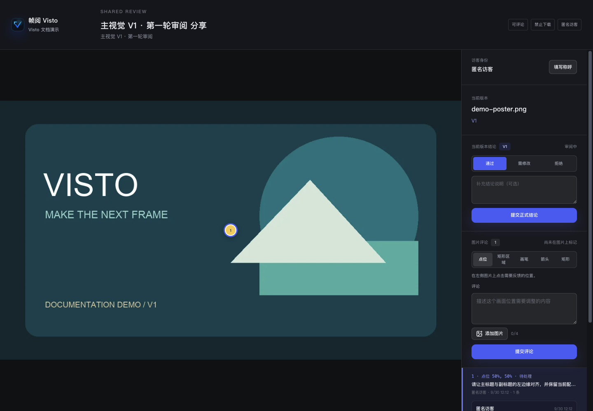

文档中心/审阅与交付
VISTO USER GUIDE / 18
提交精确反馈与审核结论
用户手册2026-10-03Server 浏览器工作台
好的反馈应说明“哪里、问题是什么、期望如何改”。尽量把内容定位到具体版本、时间或画面区域。
视频时间评论
- 打开对应审阅或分享中的视频，播放到需要反馈的位置并暂停。
- 选择时间点评论，点“抓取当前时间”，再输入意见。
- 若问题涉及一段内容，选择时间区间，设置起点和终点。
- 提交后确认评论出现，重新点击评论检查时间定位。
示例：“00:12.400–00:15.000：字幕先于旁白出现。请把字幕入点后移到第一句话开始。”
图片点位、区域与画面标记
在图片评论区选择对应工具：点位用于一个具体位置，区域用于一块画面，箭头、笔刷或矩形用于表达视觉关系。先在画面上标记，再写说明。提交后点击评论检查标记位置是否正确。


附件与回复
页面开放评论附件时，可附参考图片或文件。附件上传也可能经过安全检查；没有可用附件存储或策略拒绝时，先联系 Owner。涉及客户信息的参考文件只传到正确项目或分享。
回复里写清处理方案。具备权限的处理者可以把线程标为已解决；“已解决”表示反馈处理状态，不自动等于整轮审阅通过。
审核结论
具备结论权限的审阅者在审核结论区域提交：
| 结论 | 表达的意思 | 建议备注 |
|---|---|---|
| 通过 | 当前审阅版本符合本轮要求 | 明确是否可以交付 |
| 需修改 | 需要进一步修订 | 指向未解决反馈或说明修改范围 |
| 拒绝 | 当前版本未达到要求 | 解释原因和下一步 |
按本轮通过条件汇总结论。分享开放评论且审阅未处于草稿或结束状态时，访客也可以对当前固定版本提交正式结论；匿名访客以分享会话记录身份。关闭分享评论权限时，访客的新评论与正式结论都不能提交。